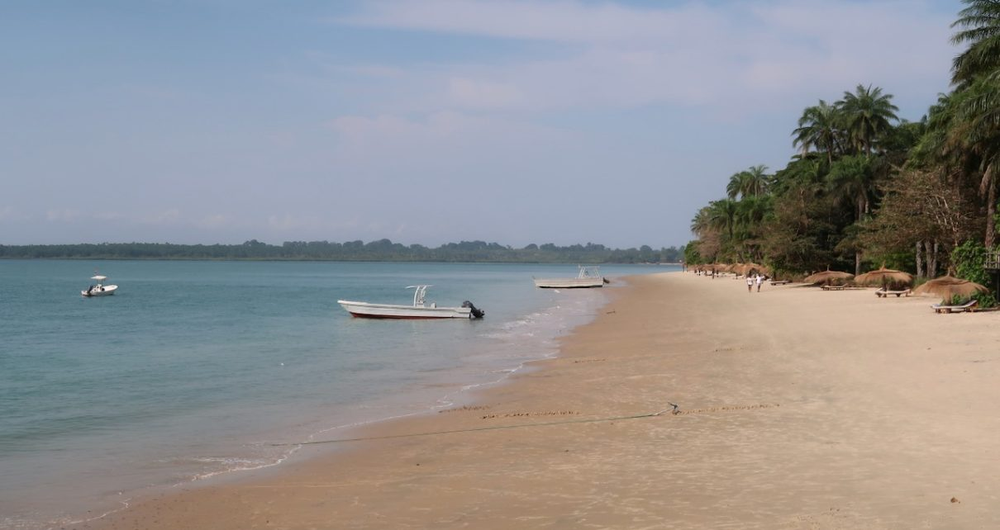
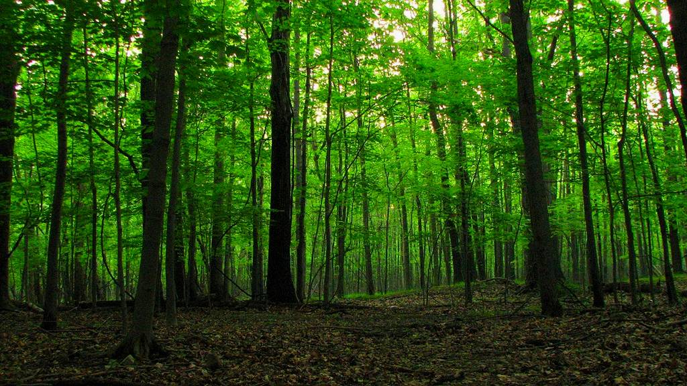

Os Majestosos Mangais
Os majestosos mangais da Guiné-Bissau são ecossistemas de enorme importância ecológica, social e econômica, que se estendem ao longo da costa e dos estuários, desempenhando papel vital na proteção contra a erosão, na regulação climática e na subsistência das comunidades locais; esses ambientes únicos funcionam como berçários naturais para diversas espécies de peixes, crustáceos e aves, garantindo a manutenção da biodiversidade e sustentando a pesca artesanal, que é uma das principais fontes de alimento e renda para milhares de famílias; além disso, os mangais atuam como barreiras naturais contra tempestades e inundações, protegendo vilas costeiras e reduzindo os impactos das mudanças climáticas; sua capacidade de absorver grandes quantidades de dióxido de carbono os torna aliados fundamentais no combate ao aquecimento global; no entanto, esses ecossistemas enfrentam sérias ameaças, como o desmatamento para obtenção de lenha e carvão, a expansão agrícola e urbana, a poluição causada pelo descarte inadequado de resíduos e o avanço da salinização dos solos; a degradação dos mangais compromete não apenas a biodiversidade, mas também a segurança alimentar e a economia local, aumentando a vulnerabilidade das comunidades que deles dependem; iniciativas nacionais e internacionais têm buscado proteger e restaurar os mangais, através de projetos de reflorestamento, educação ambiental e criação de áreas de conservação; ainda assim, os desafios persistem devido à falta de fiscalização, recursos limitados e práticas insustentáveis de exploração; para garantir a preservação desses majestosos ecossistemas, é essencial fortalecer políticas públicas, promover alternativas econômicas sustentáveis e envolver as comunidades locais na gestão dos recursos naturais; sem essas medidas, os mangais da Guiné-Bissau correm o risco de perder sua capacidade de sustentar a vida e proteger o território, comprometendo o futuro ambiental e social do país.

Reserva da BiosferaArquipelago dos Bijagos
O arquipélago dos Bijagós, localizado na costa da Guiné-Bissau, é um conjunto de mais de 80 ilhas e ilhéus que se destaca pela sua beleza natural, diversidade ecológica e importância cultural, sendo considerado uma das maiores reservas de biodiversidade da África Ocidental; esse território é habitado por comunidades tradicionais que mantêm práticas culturais e espirituais ligadas à natureza, como o respeito aos ciclos da terra e do mar, o que contribui para a preservação dos ecossistemas locais; os Bijagós são reconhecidos internacionalmente como Reserva da Biosfera pela UNESCO, devido à riqueza de sua fauna e flora, incluindo espécies ameaçadas como o hipopótamo, a tartaruga marinha e diversas aves migratórias; além disso, os mangais e zonas costeiras do arquipélago desempenham papel crucial na proteção contra a erosão e na manutenção da pesca artesanal, que é a principal fonte de subsistência das comunidades locais; no entanto, o arquipélago enfrenta desafios crescentes, como a pressão da pesca industrial, a poluição marinha, o turismo desordenado e os efeitos das mudanças climáticas, que ameaçam a integridade dos ecossistemas e a cultura tradicional; iniciativas de conservação têm buscado equilibrar o desenvolvimento econômico com a preservação ambiental, promovendo o ecoturismo sustentável e fortalecendo a gestão comunitária dos recursos naturais; a cultura Bijagó, marcada por rituais, danças e tradições espirituais, é parte essencial da identidade nacional e reforça a ligação entre o povo e o território; para garantir a sobrevivência desse patrimônio natural e cultural, é necessário investir em políticas públicas eficazes, ampliar a fiscalização contra práticas predatórias e apoiar projetos de educação ambiental e valorização cultural; sem essas medidas, o arquipélago dos Bijagós corre o risco de perder sua singularidade e comprometer tanto a biodiversidade quanto o modo de vida das comunidades que nele habitam, tornando urgente a implementação de soluções integradas que assegurem o futuro desse espaço majestoso e único.

Florestas TropicaisO pulmão de Cantanhez
O pulmão de Cantanhez, localizado no sul da Guiné-Bissau, é uma das áreas de maior riqueza ecológica do país e desempenha papel fundamental na preservação da biodiversidade e na regulação ambiental, sendo considerado um verdadeiro tesouro natural; trata-se de uma vasta região de florestas tropicais, mangais e savanas que abriga espécies raras e ameaçadas, como chimpanzés, hipopótamos e diversas aves migratórias, tornando-se um dos principais refúgios de fauna e flora da África Ocidental; além de sua importância ecológica, o Cantanhez é vital para as comunidades locais, que dependem de seus recursos naturais para agricultura, pesca e coleta de produtos florestais, mantendo uma relação cultural e espiritual com o território; no entanto, esse pulmão verde enfrenta sérias ameaças, como o desmatamento para obtenção de madeira e carvão, a expansão agrícola, a caça ilegal e a pressão das mudanças climáticas, que comprometem a integridade dos ecossistemas; a degradação da área reduz a capacidade de absorção de carbono, intensifica a erosão dos solos e coloca em risco a sobrevivência de espécies emblemáticas, além de afetar diretamente a subsistência das populações locais; iniciativas de conservação têm buscado proteger o Cantanhez, incluindo a criação de áreas de conservação e projetos de reflorestamento, bem como programas de educação ambiental voltados para o envolvimento das comunidades; ainda assim, os desafios persistem devido à falta de fiscalização, recursos limitados e práticas insustentáveis de exploração; para garantir a preservação desse pulmão natural, é essencial fortalecer políticas públicas, ampliar a cooperação internacional e promover alternativas econômicas sustentáveis que reduzam a pressão sobre os recursos naturais; sem essas medidas, o Cantanhez corre o risco de perder sua capacidade de sustentar a vida e proteger o equilíbrio ambiental da Guiné-Bissau, tornando urgente a implementação de soluções integradas que assegurem o futuro desse espaço majestoso e único.